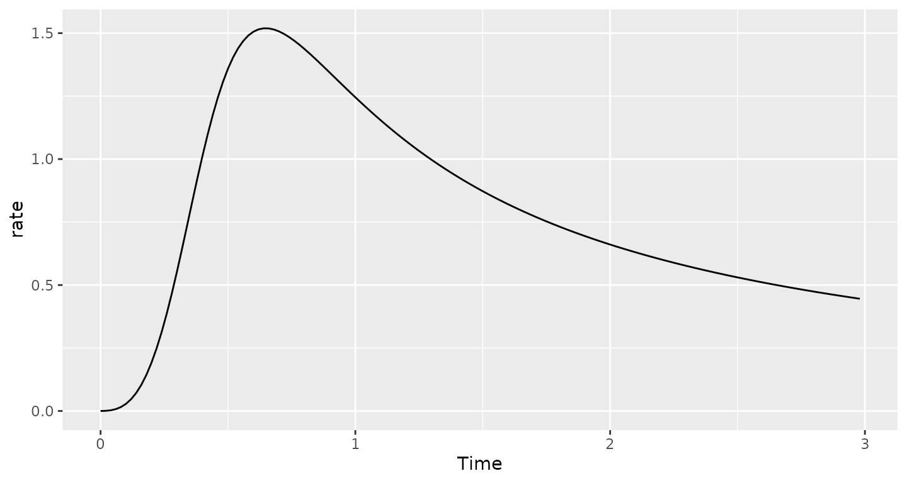

Approximating an arbitrary hazard function
Source:vignettes/arbitrary-hazard.Rmd
arbitrary-hazard.RmdWe simulate a log-logistic distribution as an example of how to simulate a trial with an arbitrary distribution. We begin by showing hazard rates that can be used to approximate this distribution.
dloglogis <- function(x, alpha = 1, beta = 4) {
1 / (1 + (x / alpha)^beta)
}
times <- (1:150) / 50
xx <- data.frame(
Times = times,
Survival = dloglogis(times, alpha = .5, beta = 4)
) |>
mutate(
duration = Times - lag(Times, default = 0),
H = -log(Survival),
rate = (H - lag(H, default = 0)) / duration / 3
) |>
select(duration, rate)
ggplot(
data = xx |> mutate(Time = lag(cumsum(duration), default = 0)),
aes(x = Time, y = rate)
) +
geom_line()
We assume the time scale above is in years and that enrollment occurs over the first half year at an even rate of 500 per year. We assume that observations are censored at an exponential rate of about 5% per year.
tx <- "Log-logistic"
enroll_rate <- data.frame(duration = .5, rate = 500)
dropout_rate <- data.frame(
treatment = tx,
duration = 3,
rate = .05,
period = 1,
stratum = "All"
)
block <- rep(tx, 2)
x <- sim_pw_surv(
n = 250, # Sample size
block = block,
enroll_rate = enroll_rate,
fail_rate = xx |> mutate(
stratum = "All",
treatment = tx,
period = seq_len(n()),
stratum = "All"
),
dropout_rate = dropout_rate
)We assume the entire study lasts 3 years
y <- x |> cut_data_by_date(3)
head(y)
#> tte event stratum treatment
#> 1 0.5901582 1 All Log-logistic
#> 2 0.6031899 1 All Log-logistic
#> 3 1.0917184 1 All Log-logistic
#> 4 0.7423789 1 All Log-logistic
#> 5 2.2160148 1 All Log-logistic
#> 6 0.5081774 1 All Log-logisticNow we estimate a Kaplan-Meier curve.
Finally, we plot the estimated hazard rate and its confidence interval as a function of time. We overlay the actual rates in red.
fit <- bshazard(Surv(tte, event) ~ 1, data = y, nk = 120)
#> Iterations: relative error in phi-hat = 1e-04
#> phi= 4.744387 sv2= 0.02357219 df= 23.6489 lambda= 201.2706
#> phi= 5.158829 sv2= 0.001847674 df= 12.04863 lambda= 2792.067
#> phi= 5.522676 sv2= 0.000541336 df= 6.799094 lambda= 10201.94
plot(fit, conf.int = TRUE, xlab = "Time", xlim = c(0, 3), ylim = c(0, 2.5), lwd = 2)
lines(x = times, y = (xx |> mutate(Time = lag(cumsum(duration), default = 0)))$rate, col = 2)